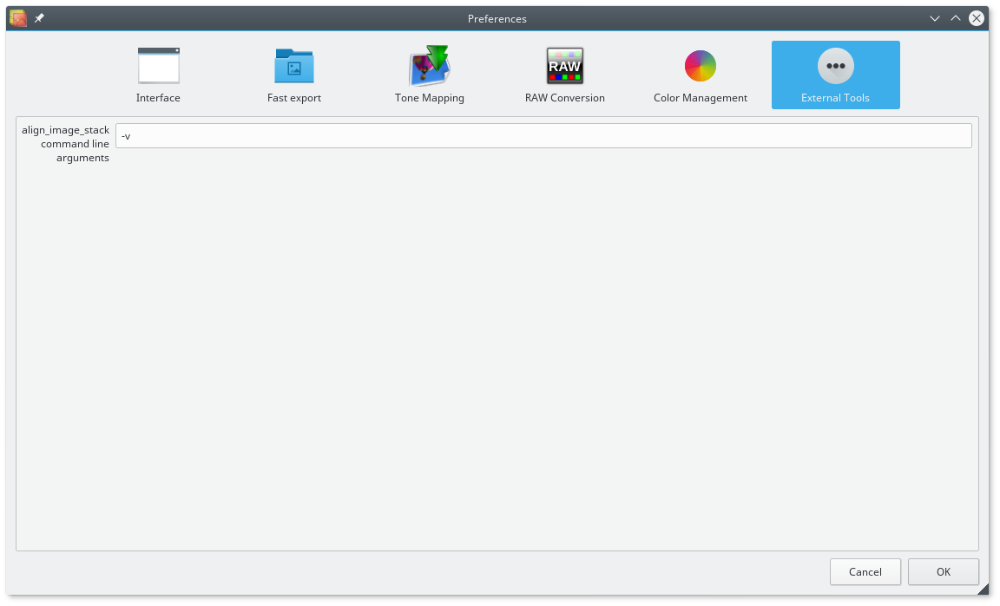

External tools
Alignment options
Luminance HDR can optionally use align_image_stack command line tool bundled with Hugin, a panorama stitcher, for the alignment of slightly misaligned images. When several differently exposed images are taken in the process of creating a High Dynamic Range image, the images are not perfectly aligned, and the quality of the HDR image created will suffer from this. align_image_stack uses the tools available to hugin to optimize the roll, pitch and yaw, as well as some parameters of the lens geometry, to align the images.
align_image_stack doesn't have a lot of relevant options, so we list them here:
- -a prefix
- Output aligned images as prefix_xxxx.tif
- -e
- Assume input images are full frame fish eye (default: rectilinear)
- -t num
- Remove all control points with an error higher than num pixels (default: 3)
- -f HFOV
- Approximate horizontal field of view of input images, use if EXIF info not complete
- -m
- Optimize field of view for all images, except for first. Useful for aligning focus stacks with slightly different magnification.
- -c num
- Number of control points (per grid) to create between adjacent images (default: 8)
- -l
- Assume linear input files
- -s scale
- Scale down image by 2^scale (default: 1 [2x down-sampling])
- -g gsize
- Break image into a rectangular grid (gsize x gsize) and attempt to find num control points in each section (default: 5 [5x5 grid])
- -v
- Verbose, print progress messages. Repeat for higher verbosity
By default Luminance HDR just defines prefix for aligned images: -a aligned_ and for verbose printing -v.
